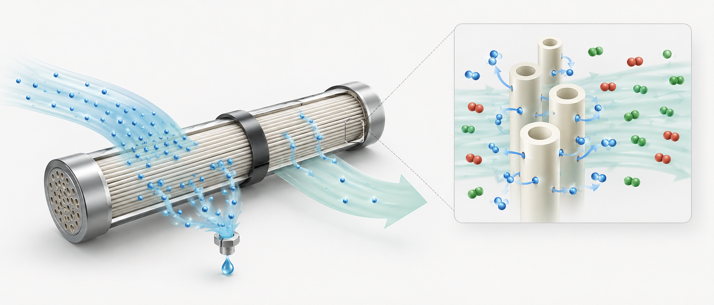
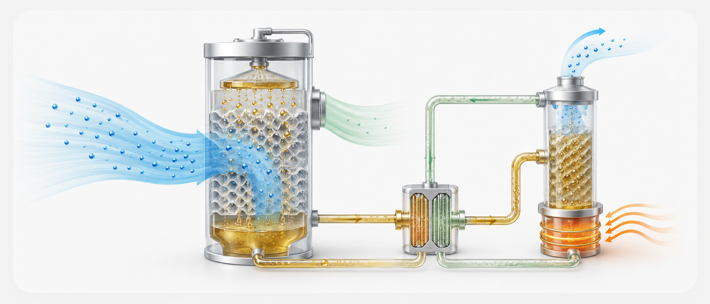
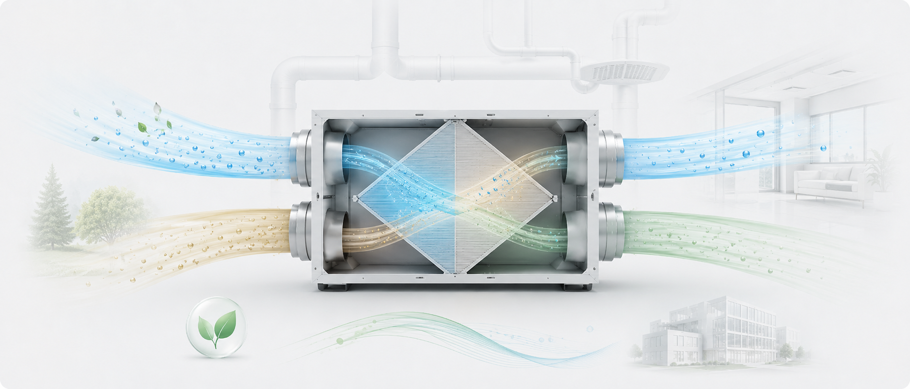
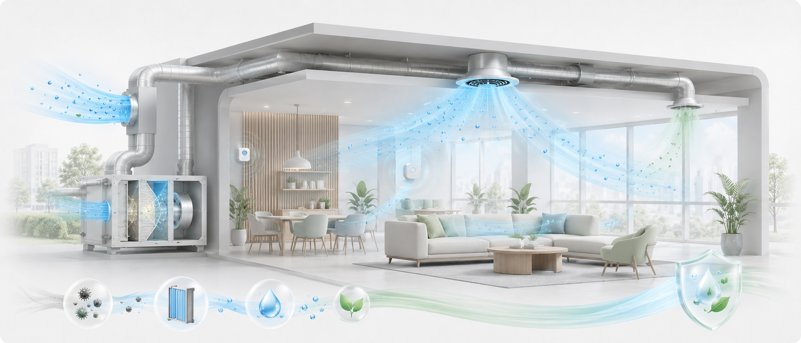

HVAC & Membrane Systems
Vapor-selective membranes, vacuum membrane dehumidification, liquid desiccant systems, latent heat exchangers, and advanced air-conditioning.
SBEEE Lab presents Hye-Jin Cho's research on sustainable building environmental systems, advanced HVAC equipment, membrane-based humidity control, indoor environmental quality, and data-informed building energy performance. The site introduces core research areas, selected projects, publications, and academic activities in building environment and energy engineering.
SBEEE Lab addresses emerging global challenges at the intersection of building energy consumption, humidity control, and indoor environmental quality. The research focuses on technologies and operation strategies that reduce energy demand while maintaining comfortable, healthy, and resilient indoor environments.
Major research themes include non-vapor-compression HVAC technologies, high-efficiency membrane-based humidification and dehumidification systems, liquid desiccant and evaporative cooling-assisted air-conditioning, ventilation energy recovery, and climate-adaptive building operation. Through system-level modeling, experiments, and building energy simulation, the lab aims to contribute to sustainable, low-carbon built environments.
Vapor-selective membranes, vacuum membrane dehumidification, liquid desiccant systems, latent heat exchangers, and advanced air-conditioning.
Building energy simulation, HVAC system modeling, data-driven performance prediction, sensitivity analysis, and optimal operation strategies.
Thermal comfort, indoor air quality, ventilation load, humidity control, and healthy indoor environmental performance in low-energy buildings.

Membrane-based dehumidification is a core research direction for high-efficiency and refrigerant-free moisture control. The research investigates vapor-selective transport, hollow fiber module design, vacuum membrane dehumidification, and membrane-enhanced DOAS configurations for future HVAC systems.

Liquid desiccant systems provide an alternative pathway for latent load management using hygroscopic solutions. The work analyzes heat and mass transfer, regeneration strategies, heat recovery, and hybrid membrane-LD systems for stable and efficient air-conditioning.

Research on hollow fiber membrane-based latent heat exchangers evaluates moisture recovery, ventilation load reduction, energy recovery ventilators, and building-scale energy saving potential for zero-energy buildings.

Indoor environmental quality research connects thermal comfort, humidity, air quality, exposure risk, and hygienic operation of humidification and dehumidification systems in energy-efficient buildings.
B.S. in Architectural Engineering, Hanyang University
M.S. in Architectural Engineering, Hanyang University
Ph.D. in Architectural Engineering, Hanyang University
Postdoctoral Researcher, Hanyang University
Visiting Scholar, Purdue University
Department of Architectural Engineering, Hanyang University, Seoul, South Korea